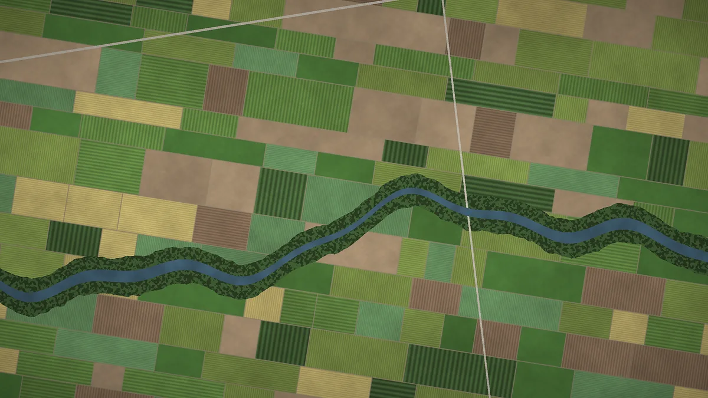
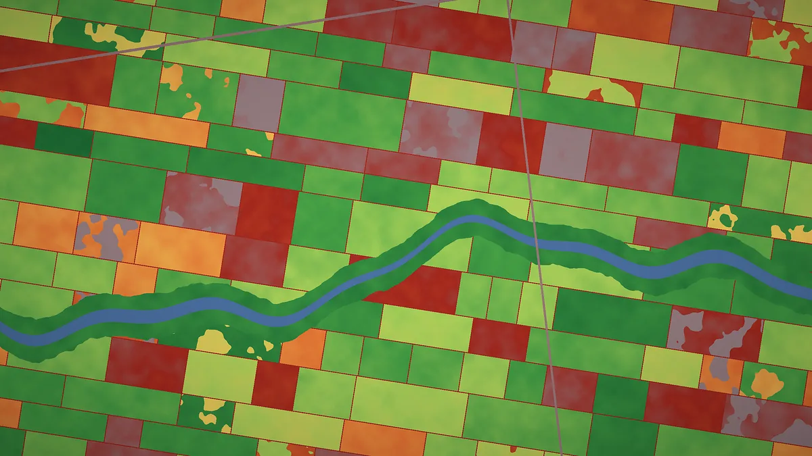
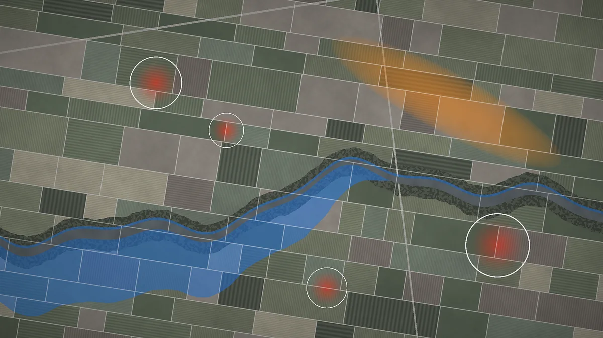
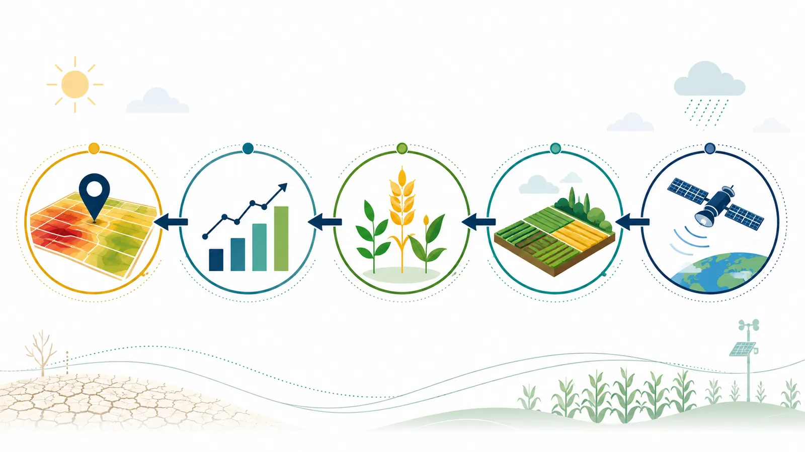
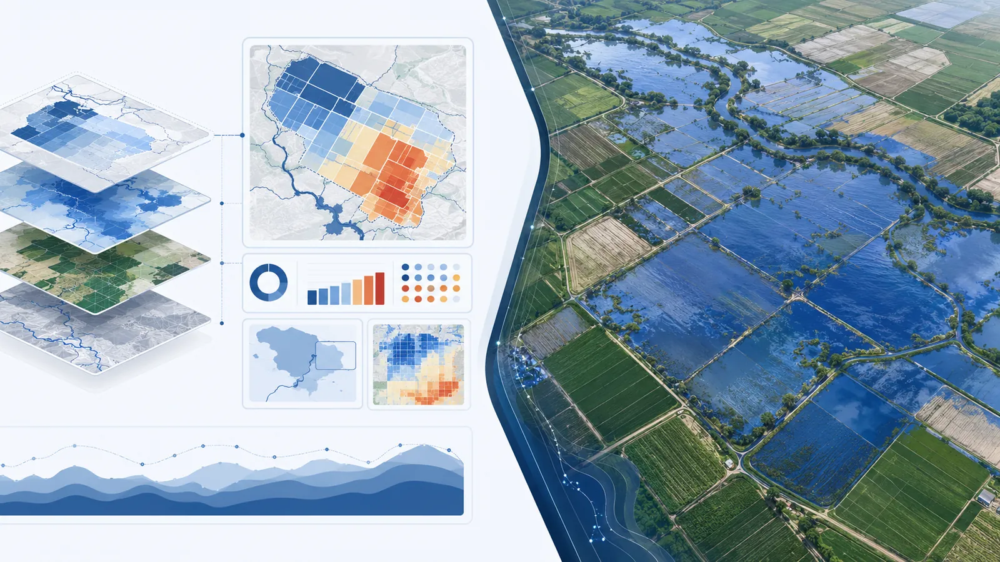
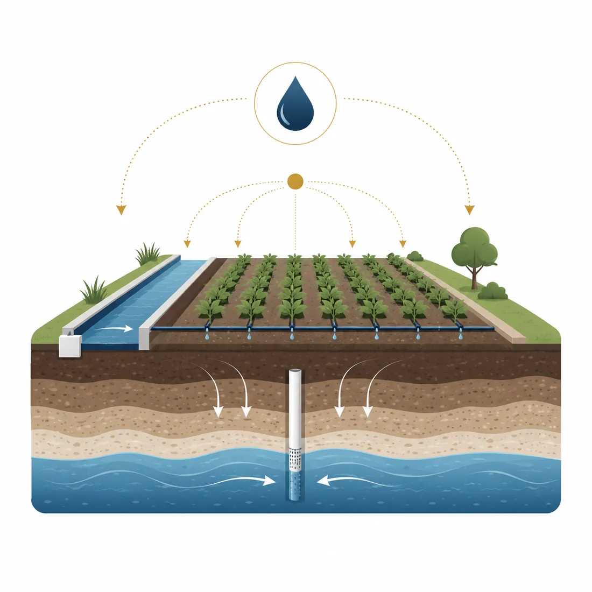

الألوان الحقيقية
ما يراه القمر الصناعي: حدود القطع ونوع المحصول والأنهار والطرق. نقطة البداية لكل تحليل.
- مزروع
- بور
- مياه
الاستشعار عن بُعد · الذكاء الاصطناعي · النمذجة الفيزيائية
ترى آرتاسات الجفاف والفيضانات والبَرَد والآفات في كل قطعة زراعية، وتحوّل الضرر إلى رقم، وتطلق التنبيه قبل فوات الأوان.
كل بضعة أيام تُمسح كل مزرعة من الفضاء، وتحوّل نماذجنا هذه البيانات الخام إلى خرائط وأرقام أضرار وتنبيهات قابلة للتنفيذ.
الطبقات



ما يراه القمر الصناعي: حدود القطع ونوع المحصول والأنهار والطرق. نقطة البداية لكل تحليل.
يُظهر مؤشر NDVI ونطاقات الحافة الحمراء القطع السليمة وتلك الواقعة تحت إجهاد مائي أو ضغط الآفات، قبل أن يظهر ذلك للعين.
نطاق الفيضان ومسار البَرَد وبؤر الآفات تجتمع على خريطة واحدة، مع رقم ضرر محسوب لكل قطعة.
ما لا تراه العين
الجانب الأيمن بالألوان الحقيقية والأيسر للمنطقة نفسها بمؤشر NDVI. الحقول التي تبدو خضراء وسليمة في الصورة العادية تكشف إجهادها في NDVI.
التحدي
تقع معظم الأراضي الزراعية في إيران ضمن مناخ جاف وشبه جاف، لذا يصل كل تقلب مناخي مباشرة إلى إنتاجية المحاصيل ومعيشة الريف والأمن الغذائي.
قد تقضي الفيضانات والبَرَد والأمطار غير الموسمية على إنتاج موسم كامل وجودته خلال ساعات.
شحّ المياه وتوالي موجات الجفاف وتراجع المياه الجوفية تهدد استقرار الإنتاج.
المعاينة الميدانية بطيئة ومكلفة، وكثيراً ما تنتهي بخلاف بين المزارع وشركة التأمين.
تفتقر جهات التأمين والجهات الحكومية ومديرو المياه إلى بيانات دقيقة ومحدّثة لاتخاذ القرار.
الوحدات
تعالج كل وحدة أحد المخاطر الرئيسية للإنتاج الزراعي، وتجتمع كلها على خريطة واحدة ولوحة تحكم واحدة.

الجفاف وتراجع الإنتاجية تحديد المحصول وتقدير الإنتاجية والضرر لكل قطعة اقرأ المزيد
الفيضانات تحديد الأراضي المعرّضة للفيضان وتقدير شدة الضرر اقرأ المزيد البَرَد والأمطار غير الموسمية تحليل الظواهر المتطرفة وأضرار تغيّر نمط الهطول اقرأ المزيد
إدارة الموارد المائية تحسين استخدام المياه السطحية والجوفية لكل مزرعة اقرأ المزيد
جديد الاستشعار عن بُعد للآفات اكتشاف مبكر لبؤر الآفات وتقدير الأضرار من الفضاء تغيّر الآفات والأمراض البصمة الطيفية للنبات قبل أن يظهر الضرر للعين. تحلل هذه الوحدة نطاقات الحافة الحمراء والأشعة تحت الحمراء القريبة والسلاسل الزمنية لمؤشرات الغطاء النباتي والظروف الجوية، لكشف شذوذ صحة النبات وتمييزه عن الإجهاد المائي وتحديد البؤر المحتملة للآفات على الخريطة. اقرأ المزيدآلية العمل
تُجمع صور Sentinel وLandsat وبيانات الطقس والتضاريس والموارد المائية وتُعالج مسبقاً لكل منطقة.
نماذج تعلّم الآلة إلى جانب النمذجة الفيزيائية تقدّر نوع المحصول وصحة النبات وأثر كل خطر.
خرائط وأرقام أضرار وتقارير جاهزة لاتخاذ القرار، من مزرعة واحدة حتى محافظة كاملة.
التسليم
خرائط تفاعلية واتجاهات المؤشرات وقوائم القطع عالية المخاطر للخبراء والمديرين.
ربط التقديرات مباشرة بأنظمة الاكتتاب والتعويض لدى شركات التأمين.
رسائل قصيرة وواضحة للمزارع قبل وقوع الحدث أو بعده مباشرة.
تقارير أضرار موثّقة مع التحليل، جاهزة للجهات المعنية ولجان التعويض.
لمن صُممت
تقييم سريع وموثّق للأضرار مع زيارات ميدانية أقل.
صورة محدّثة عن الأراضي والمحاصيل والأضرار في المحافظة.
رصد الاستهلاك وكشف الاستخدام غير المرخّص وتوزيع المياه بذكاء.
إدارة مخاطر سلسلة الإمداد والتنبؤ بإنتاجية المحاصيل.
معرفة سجل مخاطر الأرض قبل الزراعة أو الشراء.
لماذا آرتاسات
يُحسب الضرر لكل قطعة منفصلة، لا كمتوسط إقليمي.
دمج النمذجة الهيدروديناميكية مع الذكاء الاصطناعي لتقديرات يُعتمد عليها.
تقدير أضرار الآفات وفق أحدث الأساليب البحثية.
حيث تقل المحطات والبيانات الميدانية، تسدّ النماذج البديلة الفجوة.
مخرجات جاهزة للعرض دون ساعات من العمل اليدوي.
دون الاعتماد على الدفع بالعملة الأجنبية أو منصات خارجية خاضعة للعقوبات.
الأبحاث
حلّل إطارنا لتعلّم الآلة القابل للتفسير لتقييم الجفاف الزراعي 24 عاماً من بيانات الأقمار الصناعية في حوض شوشتر الفرعي.
معامل التحديد (R²) لنموذج XGBoost في تقدير مؤشر حالة الغطاء النباتي
اطّلع على أبحاثنا